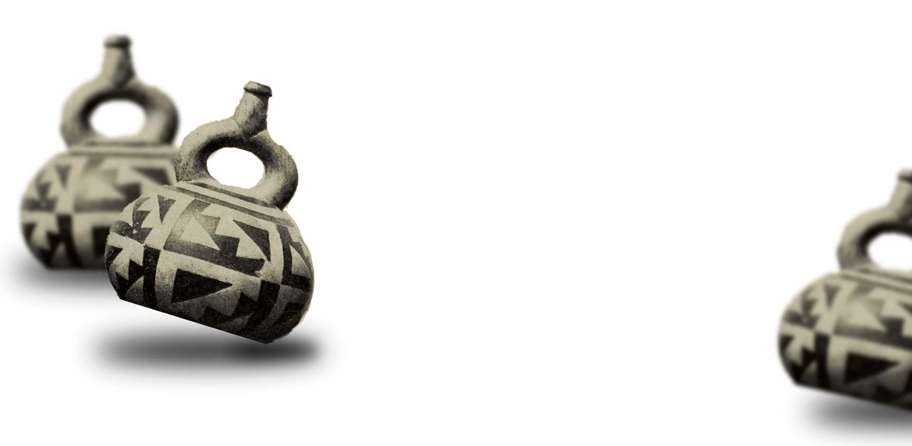

Historia Kettlebells...
...bo warto wiedzieć
Na swych pokrętnych ścieżkach dziejowych człowiek niemalże od zawsze dążył do osiągnięcia harmonii ducha i ciała. Starożytni Grecy nazywali ten cel – kalos kagathos, połączenie tego, co dobre i piękne. Szukano go nierzadko w sporcie, który na przestrzeni stuleci rodził nowe dyscypliny oraz nakreślał teorie filozofii życia. Kettlebells czyli trening z odważnikami niewątpliwie wpisuje się w te dociekania, tutaj piękno objawia się w sile.